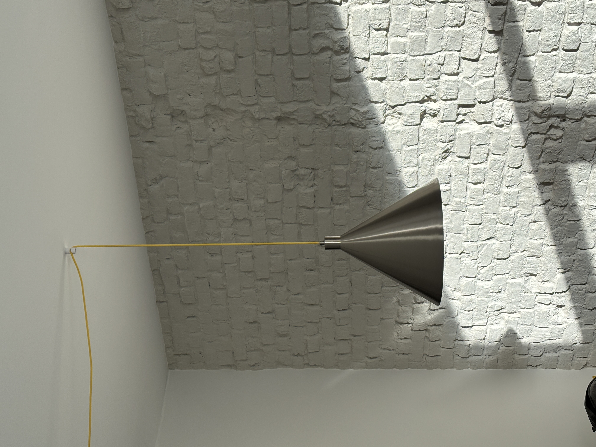
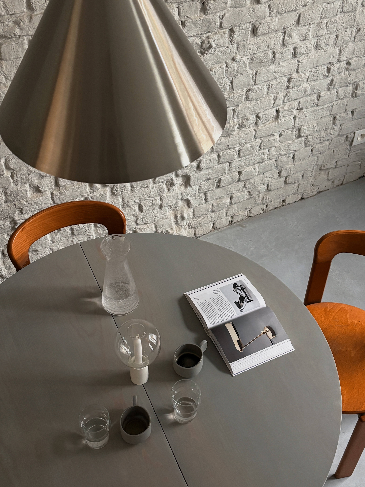
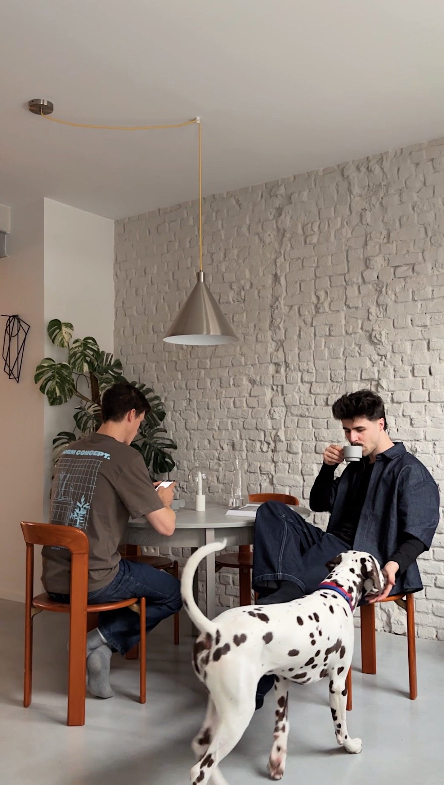

Tension Lamp
2024




Brass rod held in equilibrium by a linen shade. The Tension Lamp expresses the moment of balance between weight and suspension — a quiet study in material contrast and structural honesty.
- Materials
- Brass + Linen
- Dimensions
- 30 × 30 × 55 cm
- Category
- Lighting
- Edition
- Limited (25)